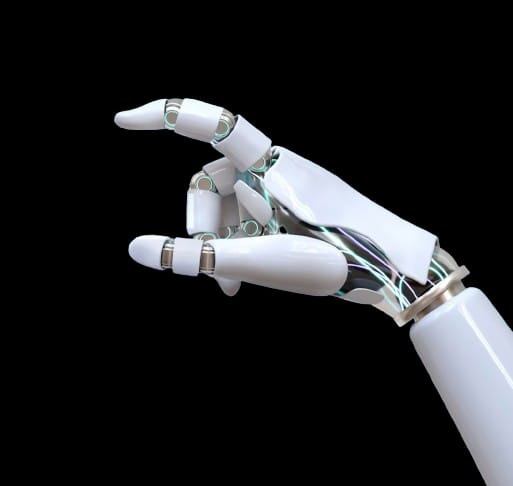
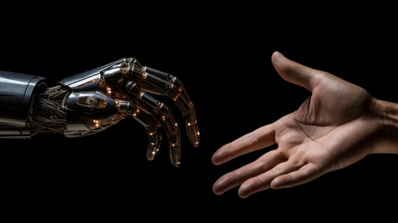

O Que é a Inteligência Artificial ?
A inteligência artificial é um campo de estudo multidisciplinar que abrange varias áreas do conhecimento. É também um conjunto de novas tecnologias que permitem aos aparelhos smart executarem várias funções avançadas de modo quase autônomo, representanto um marco histórico na computação moderna. O conceito de IA foi formalmente introduzido em 1956, durante uma conferência no Dartmouth College, nos EUA, pelo cientista da computação John McCarthy. Este marco nomeou um campo emergente que, desde os anos 1940, aspirava a replicar matematicamente as funções dos neurônios cerebrais.
A Inteligência Artificial busca fazer com que as máquinas executem tarefas complexas, simulando a inteligência humana e tomando decisões de forma autônoma. Para que isso seja possível, em muitos casos, há uma combinação de várias tecnologias, como machine learning, reconhecimento de voz e deep learning.
Como Funciona a Inteligência Artificial ?
O funcionamento da Inteligência Artificial se baseia na combinação de grandes volumes de dados digitais e algoritmos inteligentes. Respectivamente, eles permitem ao sistema ler e interpretar padrões e informações para aprender automaticamente. É importante destacar que, para que esse aprendizado aconteça, o sistema de Inteligência Artificial precisa ser constantemente alimentado com novos dados. Assim, o funcionamento da IA baseia-se em: Modelo de dados: estruturas utilizadas para processar, categorizar e analisar dados; Big Data: disponibilização de grandes volumes de dados; Poder de processamento: trata-se da capacidade operacional do sistema em processar as informações. Para que todo esse processo aconteça, no entanto, é necessário combinar diferentes tecnologias que, juntas, conferem à máquina a capacidade de imitar o raciocínio lógico humano.
Avanço da IA (Inteligência Artificial)
O uso da tecnologia e, consequentemente, da Inteligência Artificial (IA), é cada vez maior em todas as áreas do conhecimento, nas mais simples atividades do dia a dia de qualquer ser humano e em qualquer parte do mundo, sem nem mesmo que as pessoas percebam sua presença. É possível resumir a Inteligência Artificial a um campo das ciências da computação em que máquinas ou algoritmos realizam tarefas. Assim, é usada em buscas na internet, compras no comércio eletrônico, serviços bancários virtuais, aplicativos e smartphones, entre diversos outros produtos e serviços. Mas, assim como a Inteligência Artificial pode trazer inúmeras vantagens, como praticidade, velocidade e qualidade dos serviços, também esbarra em questões éticas, morais e sociais e pode oferecer riscos, caso seja usada irresponsavelmente ou para fins negativos.
IA ao Seu Favor !
Uma das formas mais impactantes de utilizar a inteligência artificial nos negócios é por meio da automatização de processos. Tarefas repetitivas e demoradas podem ser facilmente delegadas a sistemas de IA, liberando os colaboradores para atividades mais estratégicas e criativas. Isso resulta em maior eficiência, redução de erros e aumento da produtividade.
A IA também possui a capacidade única de analisar e processar grandes volumes de dados em tempo real. Isso possibilita que as empresas obtenham insights valiosos sobre padrões de consumo, preferências dos clientes e tendências de mercado. Com base nesses insights, as estratégias de marketing, vendas e desenvolvimento de produtos podem ser ajustadas de forma a atender às demandas em constante mudanças.
A implementação de chatbots e assistentes virtuais impulsionados por IA está transformando a experiência do cliente. Esses sistemas podem oferecer suporte 24/7, responder a perguntas frequentes e até mesmo resolver problemas simples, proporcionando um atendimento mais rápido e eficaz. Isso resulta em maior satisfação do cliente e fortalecimento da relação com a marca.